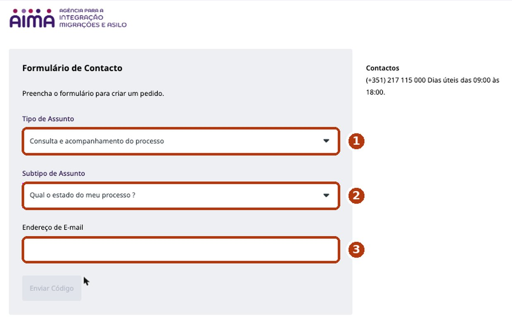
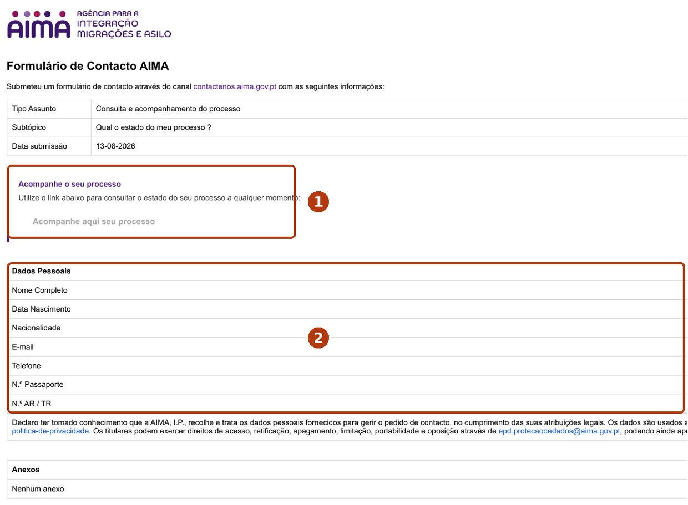
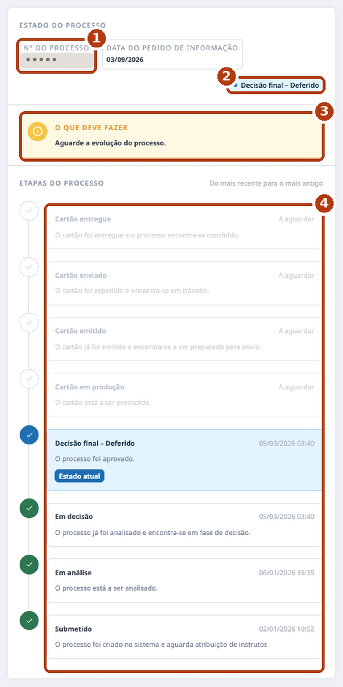
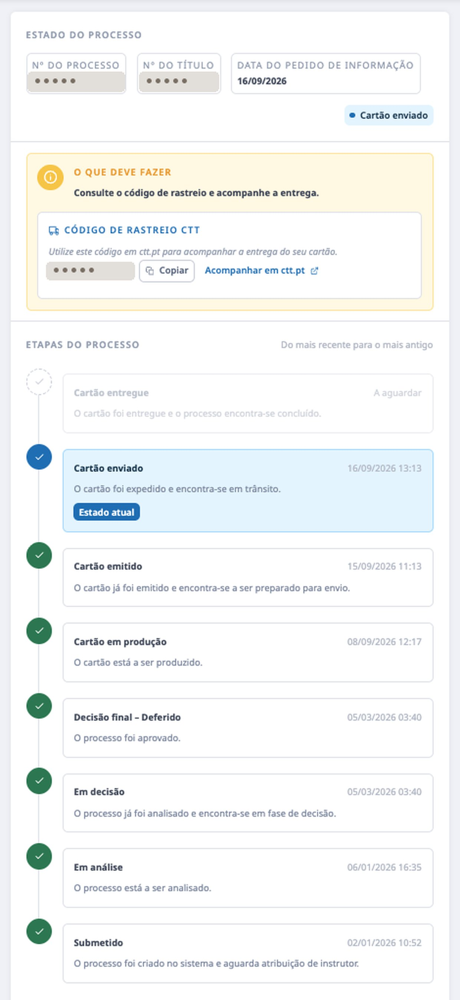
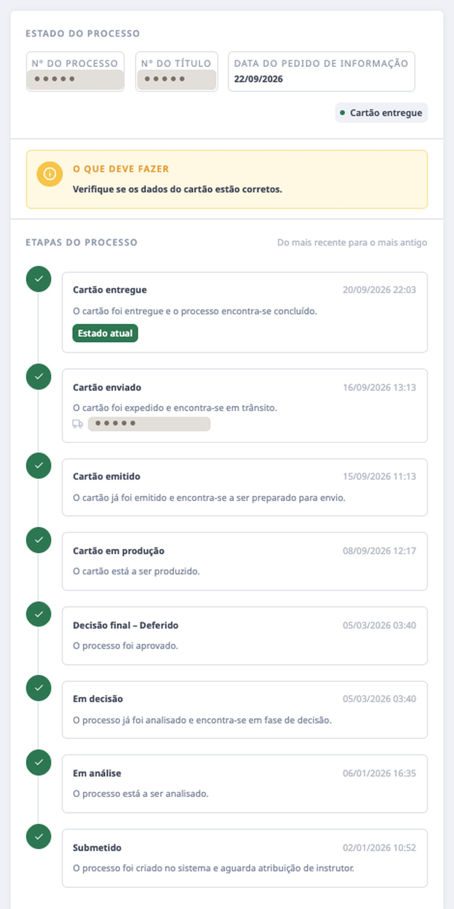
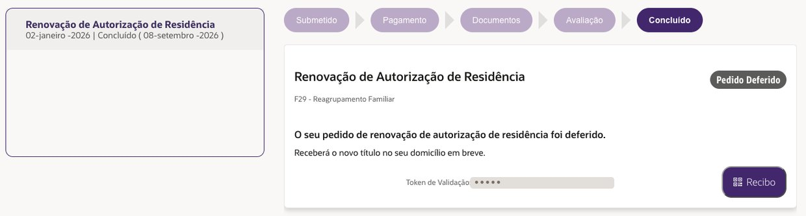
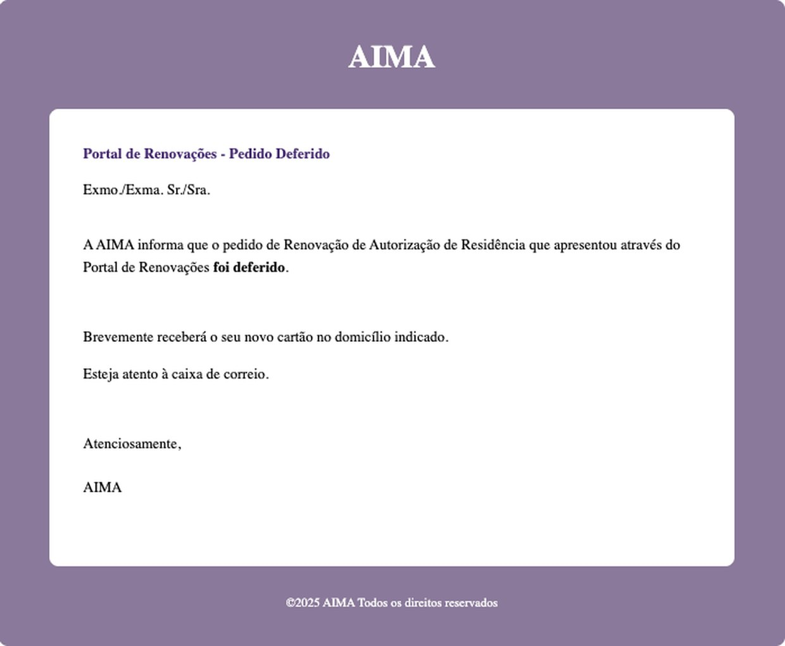
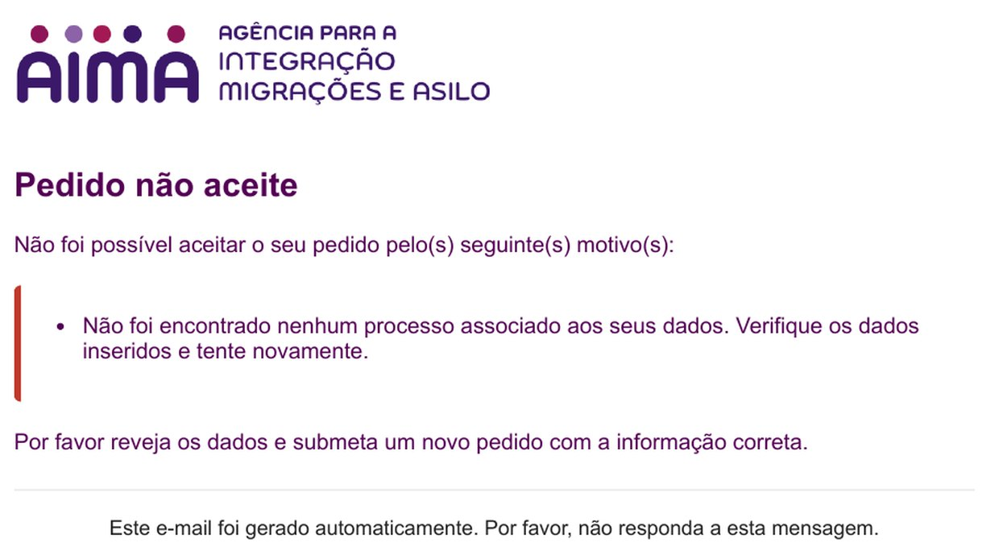

У AIMA есть страница, которая показывает состояние дела по стадиям: решение, карта в производстве, отправка с кодом CTT, вручение. На сайте её нет, аккаунт не нужен — ссылка приходит на почту после формы на пять минут. Так мы узнали, что наше дело было одобрено четыре с половиной месяца назад.
К шагамНаше дело было одобрено 5 марта. Portal de Renovações показывал «Em Avaliação» до 8 сентября. Трекер показал одобрение в день, когда мы его открыли.
Когда карта отправлена, появляется код отслеживания CTT. Письмо можно вести до почтового ящика.
Скриншот трекера с датой — документ: он пригодился нам в письмах в AIMA и омбудсмену (Provedor de Justiça).
Только e-mail, паспорт и номер карты ВНЖ. Никаких регистраций, Chave Móvel и картридеров.
Заполняйте только то, что просят: тип темы, подтему, e-mail, потом семь личных полей. И всё. Не ищите, «что бы ещё вписать», ничего не выдумывайте, ничего не прикладывайте. Не знаете, что в поле, — оставьте пустым и отправляйте: если оно обязательное, форма сама скажет.
Если пришло «Pedido não aceite — процесс не найден», чаще всего это не ваша ошибка: система лежала. У нас так было 12 августа; 13-го та же форма прошла. Смотрите раздел «Если трекер не работает».
На contactenos.aima.gov.pt. На первом экране два списка и поле e-mail. В списках наберите «Consulta», чтобы быстро найти нужное.
Открыть форму AIMA
Придёт письмо «Contactenos AIMA Validação de E-mail» с кодом. Введите его в форму. Только после этого появятся поля личных данных.
Код может идти не сразу. У нас — несколько минут; один раз пришлось запросить второй. Загляните в спам, прежде чем запрашивать ещё.
Полное имя как в паспорте, дата рождения, гражданство, e-mail, телефон, номер паспорта, номер карты ВНЖ («N.º AR / TR»). Поставьте галочку о персональных данных. Без вложений. Отправить.

Имя должно совпадать с делом. Если у AIMA ваше имя записано в одной транслитерации, а в новом паспорте другая — берите ту, что на карте ВНЖ.
Письмо приходит за минуты. Кнопка открывает contactenos.aima.gov.pt/tracking/… с длинным кодом на конце — это ваша личная ссылка. Сохраните в закладки или заметки: она постоянная, открывать можно хоть каждый день, не повторяя форму. Каждая новая форма даёт новую ссылку; старая продолжает работать.
На странице три блока: текущее состояние, «что нужно делать» и стадии — от последней к первой. Серые стадии с «A aguardar» ещё не наступили.

| Submetido | Заявка в системе, ждёт назначения исполнителя. |
|---|---|
| Em análise | Дело кто-то смотрит. У нас — через четыре дня после подачи. |
| Em decisão | Рассмотрено, ждёт решения. У нас сменилось в ту же минуту, что и следующая. |
| Decisão final | «Deferido» — одобрено. «Indeferido» было бы отказом. С этого момента recibo продолжает действовать как ВНЖ (Lei 23/2007, ст. 78, п. 7). |
| Cartão em produção | Карта изготавливается. У нас это началось через шесть месяцев после решения — и только после жалобы омбудсмену. |
| Cartão emitido | Изготовлена, готовится к отправке. Через день после предыдущей стадии. |
| Cartão enviado | Отправлена через CTT; появляется код отслеживания. На следующий день. |
| Cartão entregue | Вручена. Трекер отметил это через два дня после того, как письмо легло в ящик. |
Со стадии «Cartão enviado» в жёлтом блоке появляется код CTT с кнопками «Copiar» и «Acompanhar em ctt.pt». Письмо заказное: если вас нет дома, оно останется на почте. От «в производстве» до «вручена» прошло двенадцать дней.


Это другая система, и она отстаёт. Мы подали продление там 2 января; решение было 5 марта; портал показывал «Em Avaliação» до 8 сентября, когда разом перешёл в «Concluído» и «Pedido Deferido» — в тот же день, когда трекер отметил «Cartão em produção». В тот же день пришло и письмо «Pedido Deferido». Практическое правило: сначала трекер, портал — для подтверждения.


Бывает. 12 августа ссылка не открывалась, портал говорил «Em Avaliação», а форма ответила «Pedido não aceite»: процесс по этим данным не найден. Мы ничего не меняли. Утром 13 августа та же форма прошла, и трекер вернулся. С тех пор делаем так:

Это номер карты ВНЖ: девять знаков, напечатаны на карте и видны в Portal de Renovações как «Título Residência». В трекере показаны только последние. Не нашли — отправляйте без него: если поле обязательное, форма предупредит. Мы это не проверяли.
Да. Мы пользовались одной ссылкой с июля по сентябрь. Новая форма даёт новую ссылку; старая не перестаёт работать.
Мы проверяли на продлении ВНЖ (renovação de autorização de residência). Форма общая — тип «Consulta e acompanhamento do processo», — но как она ведёт себя с другими делами, не знаем. Если попробуете — расскажите.
Можно, но ответа не ждите. За четыре наши попытки единственным результатом была ссылка на трекер. Чтобы поговорить с человеком: 217 115 000, в рабочие дни.
Это был наш случай — шесть месяцев. Это отдельная история с другими шагами — для следующей страницы этой серии.
Если трекер показал вам что-то другое, форма спросила другие поля или вы нашли путь короче — напишите мне. Отвечаю сам, а ваш случай (без личных данных) попадёт на эту страницу и поможет следующим.
Игорь Картузов, SeedWave. Картинки — из моего продления ВНЖ 2026 года, номера стёрты; даты настоящие. Если у вас вышло иначе — напишите мне в LinkedIn, обновлю страницу.